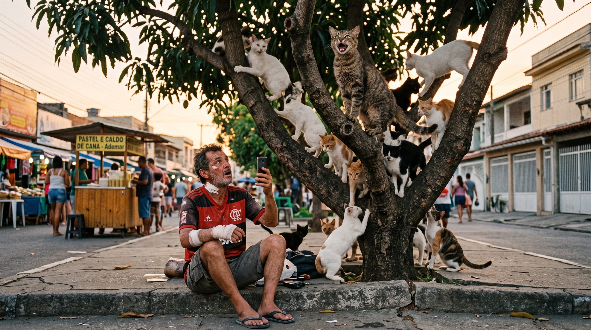

Depois de um longo dia se recuperando de seus machucados, Ademar, um pobre coitado que teve o azar de 87 homens que passaram debaixo de uma escada numa sexta-feira 13, foi na feira de sua rua matar a saudade de beber um caldo de cana e comer um pastel. Estava quase chegando na primeira beirada da feira, quando ouviu um miado feio, horroroso e desafinado, que lembrava de sua mãe cantando músicas em inglês, uma doce e tenebrosa lembrança. Atiçado pelo miado feio, pensou no pior, o pobre gato havia ficado preso em algum lugar, e mesmo sendo um lascado, coitado e fudi... Ademar era um homem justo, e precisava salvá-lo.
Com seus ouvidos de urubu, foi atrás do gato. Bizoiando todos os lugares, o achou pendurado num galho de árvore, miando alto e alto, tão alto que parecia que ia morrer de altura. Ademar, pistola das ideias, porque sabia que gatos caem de pé, foi resgatá-lo na força do ódio e da raiva. Ao ver Ademar, ele parou de miar. Estranhando, Ademar olhou para o gato e disse - "Seu filho de uma égua, por que está miando?" o gato, ainda mais pistola das ideias, olhou para Ademar e disse "Filho da égua é você, um animal desse tamanho vindo se intrometer aonde não é chamado! Se fosse macho, saberia que é essa a principal tática de conquistar as gatas, é na base do DÓ! ELAS ADORAM UM COITADO! Agora, licença, você está atrapalhando minha cantada."
Embasbacado, chocado e incrédulo, Ademar precisava ver aquele gato falhar, porque mesmo que não pudesse salvá-lo, ele sabia que poderia comê-lo após o vechame! Churrasquinho de gato, pastel de frango com catupiry e caldo de cana, quem precisaria de refeição melhor? Ademar sentou-se no chão e começou a gravar, olhando aquele gato salafráfio miar mais alto, ele saberia que seria um meme muito bom, até que ouviu um barulho vindo da esquina. Era uma enchurrada de gatas correndo em direção aquele gato safado! Ele estava certo, ser um coitado atiça a mulherada enlouquecida. Aquela árvore aonde havia um gato insuportável, agora estava recheada de gatas miando alto e brigando entre si, por causa de um coitado.
Ademar, o coitado que não soube salvar um gato e havia perdido a barraquinha de pastel com caldo de cana, havia aprendido uma enorme lição: Não ajude ninguém! Porque todo dia sai de casa um malandro e um otário, e as vezes, você precisa ser os dois.

visite o proximo cap em aqui